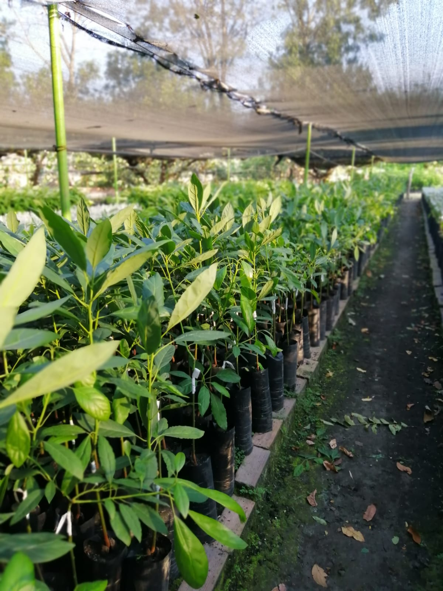

Fundación Sembrando Vida por Colombia
Sembrando Vida
por Colombia
"Sembramos hoy el agua y la vida del mañana."
Alexander Useche Cáceres · Director Fundador

"Sembramos hoy el agua y la vida del mañana."
Alexander Useche Cáceres · Director Fundador
5 pilares estratégicos que guían toda la gestión ambiental de la Fundación Sembrando Vida por Colombia.

"Sembramos hoy el agua
y la vida del mañana."